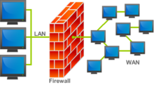
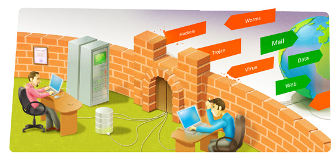

In protecting private information, a firewall is considered a first line of defense.
What is a Firewall?

A firewall's main purpose is to filter traffic and lower the risk that malicious packets traveling over the
public internet entering into private network, especially intranets.
A firewall is a network security device that monitors incoming and outgoing network traffic and decides
whether to allow or block specific traffic based on a defined set of security rules.
A firewall can be hardware, software, or both.
All messages entering or leaving the the local network to which you are connected must pass through the firewall,
which examines each message and blocks those that do not meet the specified security criteria.
Firewalls do not attempt to authenticate individual users when determining who can access a particular
computer or network.
A firewall absolutely isolates your computer from the Internet using a "wall of code" that inspects each
individual "packet" of data as it arrives at either side of the firewall — inbound to or outbound from your
computer — to determine whether it should be allowed to pass or be blocked.
Firewalls have the ability to further enhance security by enabling granular control over what types
of system functions and processes have access to networking resources. These firewalls can use various types of
signatures and host conditions to allow or deny traffic.
The work of the firewalls is the same: to stop intrusion and provide a strong method of access
control policy.
How does a firewall work?

Firewalls carefully analyze incoming traffic based on pre-established rules and filter traffic coming
from unsecured or suspicious sources to prevent attacks. Firewalls guard traffic at a computer’s entry point,
called ports, which is where information is exchanged with external devices.
For example,“Source address 172.18.1.1 is allowed to reach destination 172.18.2.1 over port 22."
Think of IP addresses as houses, and port numbers as rooms within the house.
Only trusted people (source addresses) are allowed to enter the house (destination address) at all—then it’s further filtered
so that people within the house are only allowed to access certain rooms (destination ports), depending on if
they're the owner, a child, or a guest.
The owner is allowed to any room (any port), while children and guests are allowed into a certain set of
rooms (specific ports).
If you are a system adminstrator, what precautions you will take to secure it?
Who is System Adminstrator?
A system administrator is a professional who is held accountable for network setup, annual server
maintenance such as mail servers and file servers, and much more.
What if I am System Adminstrator...
I will do installing, configuring and maintain servers and networks.
I will analyse system performance and troubleshooting the problamatic issues.
I will create a backup and safeguard the data if there is any dataloss.
I will perform system upgrades.
I will maintain internal documentation.
I will perform account setup.
I will sustain network integrity, server deployment, and security.
I will monitor and maintain network servers such as file servers,VPN gateways and intrusion detection systems.
I will ensure high-level security.
I will manage network servers and technology tools.
I will ensure security through access controls, backups and firewalls.
I will upgrade systems with new releases and models.
I will develop expertise to train staff on new technologies
I will build an internal wiki with technical documentation, manuals and IT policies